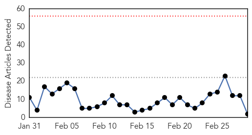
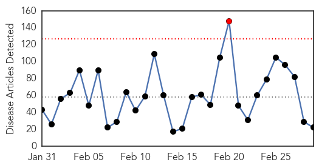

Influenza
30-Day Web Trend
0 alerts, 0 warnings

30-Day Twitter Trend
0 alerts, 0 warnings
Article Locations
Article Confidences

Top Articles:
Top Tweets:
-
No tweets found for Mar 01, 2015
Unknown
30-Day Web Trend
1 alerts, 0 warnings

30-Day Twitter Trend
0 alerts, 0 warnings

Article Locations

Article Confidences

Top Articles:
- 0.917
- Chicago Tribune
- 0.917
- Chicago Tribune
- 0.917
- Chicago Tribune
- 0.911
- Deadly 'Bourbon' virus discovered in US
- 0.888
- Deadly Superbug Linked To Doctors' Offices Kill Infect Half Million Americans Each Year
- 0.817
- Novel bornavirus possibly linked to deaths of German squirrel breeders
- 0.762
- Deadly superbug spreads untested
- 0.748
- Concern over online gonorrhoea treatment
- 0.739
- Health chiefs deny fluoridation has led to thyroid conditions
- 0.643
- Thousands to march in honour of slain Putin opponent Nemtsov
- 0.637
- Jailed PKK leader urges Kurdish separatists to lay down arms against Turkey
- 0.634
- A clear & present danger
- 0.621
- Blood biomarkers found for chronic fatigue syndrome
- 0.607
- The upside and downside of outpatient surgery
- 0.604
- Venezuela imposes visa requirement for US tourists
- 0.596
- Jailed PKK leader urges Kurdish separatists to lay down arms against Turkey
- 0.596
- Thousands of Russians march in memory of murdered Putin critic
- 0.596
- France divided over cooperation with ‘butcher’ Assad
- 0.596
- Deadly bomb blast strikes Egyptian tourist town
- 0.579
- Mali signs draft peace deal with rebels, Tuareg alliance wants more time for consultations
- 0.564
- Mugabe wants entire Africa confiscate land, mines from white
- 0.539
- The mystery of Parkinson’s disease
Top Tweets:
- 0.695
- RT: MERS Madness: March starts with 7 cases, 1 death. 3 cases are healthcare workers. Geneva, Saudi Arabia has a problem h…
- 0.590
- MERS Madness: March starts with 7 cases, 1 death. 3 cases are healthcare workers. Geneva, Saudi Arabia has a problem http://t.co/hRfvP1zBxg